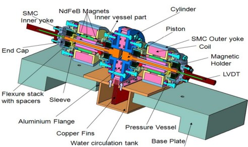
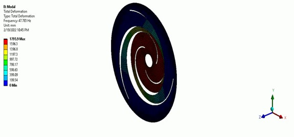
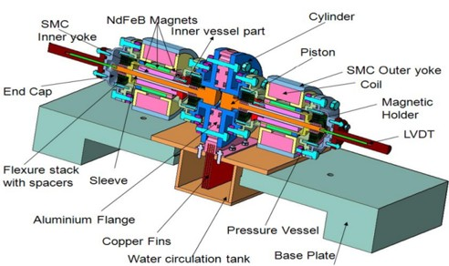
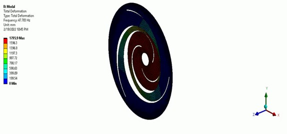

- The project aimed to optimize flexure bearings used in cryocoolers to enhance structural performance, reliability, and efficiency in cryogenic applications through an extensive simulation-driven approach.
- The flexure bearing was designed using ANSYS Design Modeler, and structural simulations were conducted to analyze forces, stress distribution, and the natural frequency of the structure, ensuring accurate performance evaluation.
- Nearly 3000 simulation-driven optimizations were performed, refining critical design parameters to achieve an ideal balance between flexibility and structural integrity, leading to an optimized bearing geometry with enhanced operational stability.
- The final design successfully minimized stress concentrations while maintaining the necessary flexibility, and a simulation-based database was developed to support further refinement and industrial applications.
- The optimized flexure bearing parameters contribute to improved cryocooler performance, increased longevity, and reduced mechanical failures, making the study highly valuable for industries that rely on efficient cryogenic systems.
Skills: CAD- SolidWorks
FEM- ANSYS Workbench, ANSYS Structural
 


